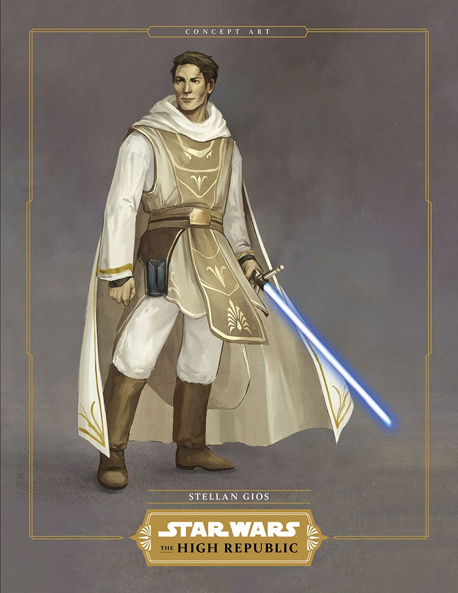

Официальный сайт приподнимает завесу тайны над масштабной издательской программой «Расцвет Республики», действие которой развернется за 200 лет до событий саги о Скайоукерах. Старт проекту будет дан осенью 2020 года и в нем примут участие все основные издатели печатной продукции по «Звездным войнам». На первой стадии проекта пять авторов (Чарльз Соул, Клаудия Грей, Кэван Скотт, Джастина Айленд и Дэниел Хосе Олдер) представят читателям самые разнообразные продукты: взрослые, подростковые и детские книги, а так же комиксы для фанатов всех возрастов.
И сегодня мы впервые познакомимся с некоторыми рыцарями и мастерами-джедаями, которые станут героями новых историй.
«Тысячу поколений рыцари-джедаи поддерживали мир и справедливость…»
Эти слова Оби-Вана Кеноби из фильма «Новая надежда» годами будоражили умы фанатов, порождая вопросы, образы и распаляя любопытство. Какими были джедаи на пике своего расцвета, задолго до появления Люка Скайуокера? Как они взаимодействовали с Галактикой? Кем они были?
Грядущий масштабный кроссплатформенный проект компании Lucasfilm под названием «Звездные войны: Расцвет Республики» даст нам ответы.
«Читатели познакомятся с очень широким спектром джедаев тех времен. Это светлое, полное надежд время, когда джедаи добродетельны и благородны. И мы хотим отразить это в их персонажах, но при этом сделать их достаточно глубокими и не картонными, чтобы герои проявляли свои собственные особенности. Рыцари-джедаи расцвета Республики одновременно амбициозны и воодушевляющи. Короче, они хорошие ребята.»
Джедаи, несомненно, будут героями «Расцвета Республики», однако они совершенно точно будут отличаться друг от друга и, невзирая на разные расы, им не будет чуждо ничто «человеческое».
«Мы потратили много времени и сил, чтобы наши джедаи были похоже на настоящие, многогранные личности». Они все непохожи, каждый взаимодействует с Силой особым, характерным только для него образом, но при этом все они объединены общей целью. Они служат не потому, что так предписано непоколебимыми догмами, а из-за стойкого желания защищать свет и жизнь. Они все находятся на разных этапах своего жизненного пути. Кто-то может похвастаться жизненным опытом, а чье-то преимущество — это нахрапистость молодости. Одни еще ищут свое место в Ордене, а другие совершенно естественно принимают на себя роль лидера. Некоторые, возможно, не захотят работать с теми джедаями, с которыми оказались рядом, но все они твердо решили нести в Галактику свет. Каждый из них силен сам по себе, но вместе они просто несокрушимы. Но, как и положено любым хорошим героям, им придется выучить определенные уроки и преодолеть немало трудностей. Впереди нас ждут очень интересные времена.»
Ниже представлены имена, концепт-арты и описание некоторых новых героев
Эйвар Крисс — ярчайший и благороднейший образец джедайской братии. Она всегда пытается разглядеть добро в окружающих и никогда не ставит себя на первое место. Она в восторге от жизни в приграничье и от тех задач, что приходится здесь решать. Таким энтузиазмом она заряжает и своих товарищей. Ей не чуждо сочувствие, она не ярый приверженец догм и всегда готова пожертвовать собой ради других. Эйвар Крисс — лучшая из лучших.
Лоден Грейтшторм — тви’лекский мастер-джедай, считающийся одним из величайших наставников Ордена. Сильный и мудрый, знающий толк в шутках Лоден считает каждое мгновение жизни за новое знание и всегда старается стать лучше сам и сделать лучше окружающих, особенно своих падаванов.
Кив Треннис — юная и горячая на голову джедайка, считающая, что впереди ее ждет великое будущее, стоит лишь ей поверить в себя. Кив, которая схватывает все на лету и действует несколько импульсивнее, чем следовало бы, лишь несколько недель назад стала рыцарем-джедаем и ее приводит в восхищение Эйвар Крисс — она знает о многих ее прошлых деяниях. Кив намерена показать себя Эйвар и другим легендарным джедаям, живущим на станции «Звездный маяк», но для этого ей сначала нужно научиться доверять себе в той же степени, в какой она доверяет Силе.
Стеллан Джиос — неунывающий и всеми уважаемый мастер-джедай. Во время своей жизни в Ордене Стеллан близко сошелся с Эйвар Крисс. Они часто выполняют различные поручения джедаев и Республики по отдельности, но, работая сообща, эта парочка превращается в неудержимую команду двух благородных героев. Стеллан хорошо владеет Силой и обладает природным даром наставника. На данный момент он живет на планете Карагон-Винер в одном из отдаленных аванпостов Храма джедаев.
Вернестра «Верн» Рво — новоиспеченный рыцарь-джедай. Она мириаланка и бывший падаван Стеллана Джиоса. Она усердно трудится и предана Ордену джедаев гораздо сильнее большинства своих сверстников. В свои шестнадцать лет она — один из самых молодых рыцарей-джедаев своего поколения. Она изо всех сил пытается соответствовать «взрослым» стандартам и быть хорошим примером для подрастающих джедаев.